Questão 1 · Tratamento nas crianças e adolescentes · 4000111993Menina, 6 anos de idade, com antecedente de Diabetes Mellitus tipo 1, em uso regular de insulina NPH, foi admitida no serviço de emergência há 2 horas, devido a quadro de vômitos e dor abdominal há 3 dias. Os exames coletados e as medidas realizadas na sala de emergência estão descritos na tabela abaixo. Ao exame, paciente encontra-se em regular estado geral, mucosas secas, FC: 115bpm, frequência respiratória de 35 ipm, PA 90/50 mmHg, tempo de enchimento capilar de 4 segundos. Queixa-se apenas de fraqueza. Dentre as medidas a serem realizadas na terceira hora, inclui-se:
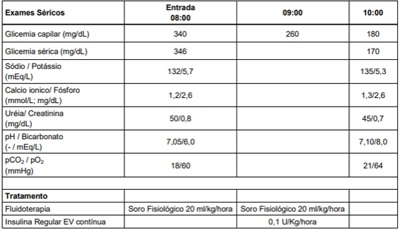
A Suspender insulinoterapia.
B Introduzir dieta pobre em potássio.
C Adicionar glicose à fluidoterapia.
D Adicionar bicarbonato à fluidoterapia.
Questão 2 · Diagnóstico e exames complementares · Tratamento e condutas · 4000111960Recém-nascido de termo, masculino, adequado para a idade gestacional, de 39 1/7 semanas, com peso de 4100g e estatura de 52 cm, nascido de parto vaginal, e mãe primigesta de 22 anos. Ao primeiro exame físico, sem anormalidades significativas, exceto por reflexo de moro assimétrico à direita, com membro superior direito com menos força, voltado medialmente, estendido e pronado. Baseado no diagnóstico principal, a conduta é:
A Ultrassonografia transfontanela.
B Observação clínica.
C Imobilização de membro.
D Fisioterapia motora.
Questão 3 · Distúrbios metabólicos do período neonatal · 4000111943Recém-nascido masculino, 2º dia de vida, apresenta quadro de tremores de membros superiores, sem outros sintomas associados. Trata-se de recém-nascido de termo, adequado para idade gestacional, lho de mãe tercigesta, realizou pré- natal com 12 consultas, com diagnóstico de diabetes gestacional. Nasceu de parto vaginal, sem intercorrências, pesando 3.120 gramas, boletim de Apgar: 09/10/10. Glicemia capilar neste momento: 52 mg/dL. Está indicado:
A Ampliar a investigação, com a dosagem de eletrólitos séricos, incluindo cálcio e magnésio.
B Obter glicemia plasmática, pois o valor da glicemia capilar não é confiável nesta idade.
C Iniciar complementação via oral, oferecendo fórmula láctea adequada para a idade.
D Obter acesso venoso, para administrar soro glicosado 10% em bolus na dose de 2 a 4 ml/kg.
Questão 4 · Diagnóstico · Sinais e sintomas · 4000111914No exame físico inicial de um recém-nascido de termo, masculino, pequeno para idade gestacional, foi notado microcefalia (PC: 31 cm) e presença de petéquias em face. Frente aos achados, foi realizada uma ultrassonogra a transfontanela, com achado de calci cações peri-ventriculares, sem outras alterações. Também colhido hemograma, com Hb 16,2, Ht 41%, leucócitos: 11.300, plaquetas: 75.000. Triagem auditiva neonatal: falhou bilateralmente. Nasceu de parto cesárea por iteratividade, filho de mãe de 32 anos, tercigesta, sem comorbidades e com pré-natal inadequado, sem coleta de exames. Os seguintes exames maternos foram colhidos nesta internação: HIV: negativo; VDRL: negativo; Hepatite C: negativo; Hepatite B: Anti-HBs positivo, anti-HBc negativo, Hbs Ag negativo; Toxoplasmose: lgM negativo / lgG negativo; Rubéola: lgM negativo / IgG positivo; Citomegalovírus: IgM negativo / IgG positivo. Frente a principal hipótese diagnóstica, a conduta indicada é:
A Coleta de teste do pezinho ampliado e cariótipo.
B Pesquisa de citomegalovírus por PCR na urina.
C Aplicar vacina e imunoglobulina para hepatite B.
D Pesquisar consumo excessivo de álcool na gestação.
Questão 5 · Icterícia neonatal · 4000111842Recém-nascido masculino, 34 horas de vida, está em alojamento conjunto com boa aceitação do seio materno. Ao exame clínico, apresenta icterícia leve (zona I-II pela classificação de Kramer), sendo optado pela coleta de bilirrubinas, com bilirrubina total de 6,5 mg/dL, bilirrubina indireta de 6,2 mg/dL. Trata-se de criança nascida de termo, adequado para a idade gestacional de 40 semanas, com peso ao nascer de 3650g, sem intercorrências. A tipagem sanguínea materna é O negativo, Coombs indireto negativo e a do recém-nascido A positivo, Coombs direto: negativo e Eluato positivo. A mãe recebeu imunoglobulina profilática na 28ª semana de gestação. A conduta neste momento é:
A Fototerapia.
B Exsanguineotransfusão.
C Observação clínica.
D Imunoglobulina.
Questão 6 · Técnicas de amamentação · 4000111821Recém-nascido feminino, 10 dias de vida, é trazido para a primeira consulta de puericultura. Trata-se de criança nascida de termo, parto vaginal, sem intercorrências, com peso de nascimento de 3.350g, adequado para a idade gestacional, boletim de Apgar 9/10/10. Filho de mãe primigesta, de 22 anos, sem comorbidades e sem intercorrências durante o pré-natal. Tipagem sanguínea materna e do RN: A+. A criança recebeu alta no 3º dia de vida, com peso de 3.100g. Na consulta de hoje, a mãe refere que produz bastante leite e que a criança suga bem, mas está cansada porque a criança quer mamar de hora em hora, eventualmente com intervalos de 30 minutos entre as mamadas. Criança evacua três vezes ao dia, com fezes amareladas. Diurese clara, com 4 trocas de fraldas ao dia. Ao exame clínico, apresenta icterícia zona III, sem outras alterações significativas. Peso atual de 3.205g. A conduta indicada é:
A Orientar mamadas mais longas e efetivas, e marcar retorno precoce para reavaliação do peso.
B Reforçar a manutenção do regime de livre demanda e realizar seguimento habitual de puericultura.
C Iniciar fototerapia, com investigação de infecções, doenças metabólicas e erros inatos do metabolismo.
D Encaminhar a mãe para avaliação psicológica e convocar familiares para auxiliarem o cuidado.
Questão 7 · Síndrome torácica aguda · 4000111806Adolescente masculino, 13 anos de idade, portador de anemia falciforme em seguimento regular com hematologista, apresenta queixa de febre e tosse há dois dias e dor em face anterior do tórax a direita. Ao exame clínico encontra-se em regular estado geral, levemente descorado, FC: 84 bpm, FR: 34 ipm, Saturação de Oxigênio: 95% em ar ambiente, Temp: 38°C, PA: 100/60 mmHg. Realizou radiografia de tórax, que mostrou a imagem abaixo: A conduta inicial mais adequada é:

A Prescrição de amoxacilina, alta hospitalar com reavaliação.
B Internação com ceftriaxone e claritromicina.
C Fibrinolítico endovenoso e enoxaparina dose terapêutica.
D Hiper-hidratação endovenosa e oxigenioterapia.
Questão 8 · Síndromes clínicas da cardiopediatria · 4000111783Menino, 8 anos de idade, portador de síndrome nefrótica corticodependente, encontra-se internado há dois dias por quadro atual de descompensação da síndrome, desencadeada por infecção de vias aéreas superiores. Está recebendo albumina humana 20% intravenosa. Após a infusão de cerca de metade da dose, apresenta queixa de desconforto respiratório. Em sua avaliação clínica, nota-se FR: 32 ipm, FC: 138 bpm, PA: 140/88 mmHg, Saturação de Oxigênio de 89% em ar ambiente, ausculta de estertores crepitantes em ambas as bases pulmonares e fígado palpável a 3 cm do rebordo costal direito. Qual é o medicamento indicado neste momento?
A Alteplase.
B Dobutamina.
C Furosemida.
D Epinefrina.
Questão 9 · Tratamento do Choque Séptico · 4000111760Menina, 7 anos de idade, previamente hígida, apresenta quadro de febre há 1 dia de até 39,5°C, mal-estar e hipoatividade. Foi admitida no Pronto-Socorro letárgica, sendo levada à sala de emergência. Na avaliação primaria, estava febril, sonolenta, porém responsiva ao chamado, hidratada. Apresentava extremidades frias, pulsos nos e tempo de enchimento capilar de 6 segundos. Ausculta pulmonar e cardíaca sem alterações, abdome indolor, sem visceromegalias. Abaixo os dados de monitorização do paciente. Qual é a conduta imediata?

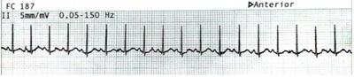
A Sedação seguida de cardioversão elétrica.
B Ceftriaxone e expansão volêmica.
C Manobra vagal seguida de adenosina.
D Antitérmico e reavaliação após 1 hora.
Questão 10 · Tratamento · 4000111714Lactente masculino, 2 meses de idade, nascido de termo, parto vaginal, sem intercorrências até o momento, está sendo reavaliado na retaguarda de um Pronto- Socorro. Há 4 dias iniciou quadro de coriza hialina e tosse, e há um dia evoluiu com desconforto respiratório. Apresentou febre de até 38,6°C apenas no primeiro dia de história do quadro atual. O paciente deu entrada há cerca de 10 horas e está com a seguinte prescrição: Peso 4,8 kg; No momento da sua reavaliação, o paciente está em regular estado geral, hidratado, pálido, com ausculta pulmonar com sibilos e crepitações difusas, tiragens subdiafragmática, intercostal e de fúrcula, batimento de asas nasais. FR: 88 ipm, saturação de oxigênio 90% com oferta de O2, FC: 180bpm, PA: 78/40mmHg. Sem alterações das propedêuticas cardíaca e abdominal. Tempo de enchimento capilar de 2 segundos, pulsos normais, sem edema. Radiogra a de tórax realizada há 15 minutos: Com relação ao suporte hídrico prescrito, está correto afirmar que:
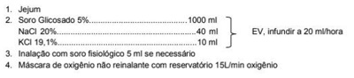

A Deve-se aumentar a velocidade de infusão para 30 mL/hora.
B O soro de manutenção está hipertônico e deve ser corrigido.
C O soro de manutenção deve ser suspenso e iniciar fórmula láctea 10 mL de 3/3 horas.
D O soro de manutenção está adequado nesse momento.
Questão 11 · Tratamento · 4000111676Lactente masculino, 2 meses de idade, nascido de termo, parto vaginal, sem intercorrências até o momento, está sendo reavaliado na retaguarda de um Pronto-Socorro. Há 4 dias iniciou quadro de coriza hialina e tosse, e há um dia evoluiu com desconforto respiratório. Apresentou febre de até 38,6°C apenas no primeiro dia de história do quadro atual. O paciente deu entrada há cerca de 10 horas e está com a seguinte prescrição: Peso 4,8 kg; No momento da sua reavaliação, o paciente está em regular estado geral, hidratado, pálido, com ausculta pulmonar com sibilos e crepitações difusas, tiragens subdiafragmática, intercostal e de fúrcula, batimento de asas nasais. FR: 88 ipm, saturação de oxigênio 90% com oferta de O2, FC: 180bpm, PA: 78/40mmHg. Sem alterações das propedêuticas cardíaca e abdominal. Tempo de enchimento capilar de 2 segundos, pulsos normais, sem edema. Radiogra a de tórax realizada há 15 minutos: Qual é a conduta imediata para estabilizar o paciente?

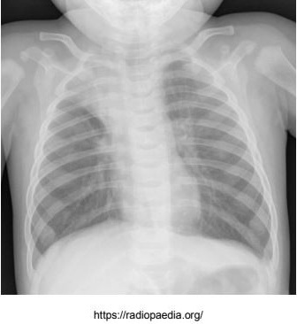
A Indicar drenagem torácica à direita.
B Iniciar antibiótico de amplo espectro e expansão volêmica.
C Escalonar suporte ventilatório invasivo ou não invasivo.
D Prescrever droga vasoativa com efeito inotrópico.
Questão 12 · Tratamento · Pediatria · 4000111633Menino, 2 anos de idade, há 6 dias apresenta quadro de febre alta e irritabilidade com piora nos últimos dias, acompanhada das seguintes alterações: Não há queixas respiratórias ou gastrointestinais. Considerando a principal hipótese diagnóstica, qual é o tratamento?
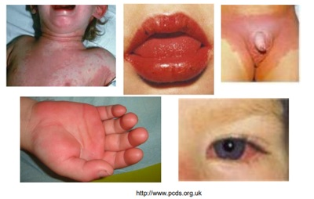
A Vitamina A.
B Paracetamol.
C Penicilina benzatina.
D Gamaglobulina.
Questão 13 · Reanimação neonatal · 4000111585Na sala de parto um recém-nascido de termo é seco e estimulado ao nascer, está em apneia, hipotônico e cianótico com frequência cardíaca de 70 bpm. Com um minuto de vida, continua cianótico, hipotônico e tem uma frequência cardíaca de 70 bpm, respirando irregularmente a uma taxa de 15 respirações por minuto e faz algumas caretas durante a estimulação, mas não chora. A equipe segue as diretrizes apropriadamente, faz ventilação com pressão positiva com máscara. Aos 5 minutos, a frequência cardíaca subiu para 90 bpm, o tronco cou corado (mas as mãos e os pés permanecem cianóticos), está respirando espontaneamente e tem melhora do tônus exor, mas não se movimenta ativamente. Aos 10 minutos, o lactente está chorando, respirando, se movimentando ativamente, completamente corado e com frequência cardíaca de 120 bpm. Quais notas foram as pontuações do Boletim de Apgar dessa criança?
A 3, 6 e 10.
B 3, 7 e 9.
C 4, 6 e 9.
D 4, 7 e 10.
Questão 14 · Diagnóstico Dif erencial · Fibrose Cística · Trato Gastrointestinal · 4000111562Menina, 9 anos de idade, vem para sua primeira consulta de acompanhamento. A mãe a rma que sempre apresentou infecções respiratórias frequentes, com uso de antibióticos em múltiplos tratamentos desde 1 ano de idade. Refere ter tosse com produção de secreção, diariamente, e falta de ar na atividade física da escola. A mãe também está preocupada com o seu baixo crescimento e baixo ganho de peso. Ao exame clínico está abaixo do percentil 5 na altura e também no peso para sua idade. À ausculta apresenta estertores grossos difusos e baqueteamento de dedos. Qual é a principal hipótese diagnóstica para o quadro?
A Asma não controlada.
B Fístula traqueoesofágica.
C Fibrose cística.
D Tuberculose.
Questão 15 · Desenvolvimento psicossocial do adolescente · 4000111550Adolescente, sexo feminino, 14 anos de idade, veio para consulta ambulatorial acompanhada de sua mãe, que está muito preocupada com o seu desempenho escolar. A adolescente está no 9º ano, nunca reprovou, mas este semestre está de recuperação em matemática, física e química, cujas provas serão realizadas amanhã. Ao ser questionada se já começou a estudar para as provas de amanhã, diz que pretende fazer isso hoje após a consulta, pois acha que a matéria não é muito extensa. Na consulta de hoje, a adolescente está nitidamente sonolenta. Quando confrontada sobre a sonolência, refere que passou a madrugada na la para comprar ingressos de um show musical que ocorrerá em junho do próximo ano. A previsão de abertura da bilheteria era hoje pela manhã, mas ela chegou com 24 horas de antecedência, por medo de perder o ingresso, sendo a primeira da fila. Levando em consideração as características do desenvolvimento psicológico-emocional presentes na adolescência, podemos enquadrar a descrição acima como uma manifestação de:
A Vivência temporal singular.
B Atitude social reivindicatória.
C Desenvolvimento do pensamento abstrato.
D Flutuação constante de humor.
Questão 16 · Síndrome do Lactente Sibilante Bebê chiador · Diagnóstico · Epidemiologia · 4000111494Menino, 1 ano e 6 meses de vida, está em acompanhamento ambulatorial devido a sibilância recorrente. O primeiro episódio foi com 7 meses de vida, iniciado por tosse, coriza e febre baixa, evoluindo com desconforto respiratório. Foi internado devido hipoxemia, recebeu alta hospitalar após dois dias com receitas de inalação com soro siológico e lavagem nasal. Ocorreram mais 5 episódios, nos quais ele recebeu prednisolona e inalações com salbutamol, sempre com boa resposta, e sem novas internações. O último episódio foi há 1 mês. A mãe notou que não é sempre que a sibilância é precedida por sintomas respiratórios virais. Refere que ca assintomático entre os episódios, sem limitações nas atividades do dia-a-dia. Sono tranquilo. João nasceu de termo, sem intercorrências, começou a frequentar a creche com 6 meses de vida. Mora com mãe, pai e irmão de 7 anos, todos sem comorbidades conhecidas. Apresenta ausculta pulmonar normal, a única alteração ao exame clínico é a presença de um eczema em face, acometendo maxilares e mento, poupando o maciço central da face, com xerodermia difusa. Baseado nos critérios de Castro-Rodriguez (Índice Preditivo de Asma) para diagnóstico de asma em lactentes, podemos afirmar que a probabilidade desta criança ter asma é:
A Alta, devido à ocorrência de mais de 3 episódios em um ano e à boa resposta ao corticoide e ao broncodilatador.
B Alta, devido ao diagnóstico pessoal de dermatite atópica e à presença de sibilância sem desencadeante viral.
C Baixa, devido à ausência de história familiar de doenças atópicas, sendo o quadro atribuível à entrada precoce na creche.
D Baixa, devido à ausência de sintomas no período intercrítico e à ausência de interferência no sono e nas atividades do dia-a-dia.
Revisar: possível letra faltando em enunciado
Questão 17 · Vigilância Epidemiológica · Pediatria · 4000111464Lactente masculino, 2 meses de idade, é levado ao Pronto-Socorro por tosse produtiva há 10 dias. Teve febre de 37,8°C no início do quadro. Há 2 dias com piora da tosse, apresentando episódios de cianose após tosse e pausa respiratória. Na casa moram 4 pessoas, a mãe, o pai e um irmão de 2 anos de idade, este sem comorbidades e sem nenhuma vacinação prévia. Considerando a principal hipótese diagnóstica para este paciente, qual é a conduta imediata para seu irmão?
A Indicar bloqueio vacinal.
B Coletar secreção respiratória e medicar se resultado positivo.
C Manter observação clínica e só medicar se apresentar sintomas.
D Iniciar azitromicina em dose terapêutica.
Questão 18 · Prof ilaxia Ferro · Anemia Fisiológica · 4000111445Lactente masculino, 3 meses de vida, está em consulta ambulatorial de rotina. Tem antecedente de prematuridade de 34 semanas de gestação, devido a pré-eclâmpsia e trabalho de parto prematuro, tendo nascido com peso de 1.820 g, adequado para a idade gestacional. Nasceu bem, sem necessidade de manobras de reanimação, permaneceu internado por 15 dias para tratamento de icterícia por incompatibilidade ABO e para ganho de peso. Atualmente a criança tem estatura de 59 cm e peso de 4.700 g (ambos no percentil 50 pela idade gestacional corrigida), tendo ganhado 32 g por dia desde a última consulta. Alimenta-se de seio materno complementando com fórmula infantil adequada para idade (30 mL, 7 vezes ao dia). Nega intercorrências desde o nascimento. Na semana passada, colheu hemograma que veio com Hb 10,0 g/dL, Ht 30,0%, VCM 82 , RDW 14,1%, com leucócitos e plaquetas sem alterações. Tendo em vista os dados apresentados, qual a recomendação da diretriz mais recente de Sociedade Brasileira de Pediatria (SBP – 2018) sobre o uso de sulfato ferroso para este paciente?
A Oferecer na dose de 4 mg/kg/dia com hemograma de controle em 4 semanas.
B Iniciar apenas após completar 6 meses de idade corrigida.
C Oferecer na dose de 2 mg/kg/dia até completar 1 ano de idade.
D Iniciar apenas se deixar de receber fórmula infantil adequada para idade.
Questão 19 · Episódio hipotônicohiporresponsivo · 4000111422Lactente feminino, 4 meses de idade, é levada a UBS pela mãe, que deseja orientações sobre vacinação. A mãe refere que a criança apresentou com um quadro de palidez intensa, associado a hipotonia generalizada, iniciado 6 horas após a aplicação da vacina dos 2 meses de vida. Refere que a criança não reagia quando estimulada. À época, a mãe levou a criança ao serviço de saúde, mas o episódio se resolveu antes da chegada ao hospital. A criança foi avaliada, permaneceu em observação por algumas horas e depois foi liberada. Evoluiu bem, sem novos episódios. Atualmente com desenvolvimento neuropsicomotor adequado para a idade. Levando em consideração os dados informados pela mãe, a conduta é:
A Contraindicar as vacinas de vírus vivos atenuados (rotavírus e poliomielite) e encaminhar para imunologia pediátrica para avaliação.
B Administrar todas as vacinas previstas para a idade e manter observação médica por 6 horas após aplicação.
C Administrar cada uma das vacinas previstas para a idade em dias diferentes e observar possíveis reações de cada uma.
D Trocar a vacina tríplice bacteriana de células inteiras (DPT) por DPT acelular e aplicar as demais vacinas previstas para a idade.
Questão 20 · Intertrigo por cândida · Dermatite de f raldas · 4000111401Menina, 1 ano e 11 meses de idade, sem comorbidades, levada a UBS hoje devido a lesões em períneo surgidas há 1 semana, conforme figura abaixo. Sem outras queixas e sem outras alterações ao exame clínico. Para o tratamento da lesão atual está indicado o uso tópico de:

A Hidrocortisona pomada.
B Cetoconazol creme.
C Neomicina + bacitracina pomada.
D Pimecrolimo creme.
Questão 21 · Tumores Hepáticos Benignos · 4000111364Mulher de 33 anos, em uso de anticoncepcional oral há 18 anos, realiza tomogra a em investigação de dor abdominal, que evidenciou o nódulo hepático mostrado na imagem a seguir. Qual é a melhor conduta?
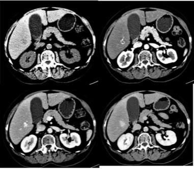
A Observação clínica.
B Nodulectomia.
C Embolização por arteriografia seletiva.
D Suspensão do anticoncepcional.
Questão 22 · Tratamento cirúrgico da obesidade · Complicações · Cirurgia · 4000111340Mulher de 44 anos, no 3º dia de pós-operatório de gastroplastia em Y de Roux por videolaparoscopia para tratamento de obesidade mórbida (IMC 44 Kg/m²). Ao exame físico apresenta-se taquicárdica (frequência cardíaca: 140bpm), PA 140 x 85 mmHg, eupneica, murmúrios vesiculares diminuídos nas bases, abdome ácido sem sinais de irritação peritoneal. Exames laboratoriais: Hb: 13g/dL; Ht: 42%; Leucograma: 17,33mil/mm³; Creatinina: 1,5g/dL; Ureia: 78g/dL; PCR: 140g/dL. Qual é a principal hipótese diagnóstica e conduta?
A Hérnia interna (Petersen), laparoscopia.
B Atelectasia pulmonar, fisioterapia respiratória.
C Tromboembolismo pulmonar, anticoagulação terapêutica.
D Deiscência de anastomose, tomografia de abdome.
Questão 23 · Terapia por Pressão Negativa · Processo de Integração do Enxerto de Pele · Debridamento · 4000111326Homem, 23 anos de idade, motociclista, foi vítima de colisão com automóvel. No Serviço de Emergência foi avaliado e liberado pela Cirurgia Geral e pela Ortopedia, sendo posteriormente encaminhado à cirurgia plástica que identi cou ferimento descolante de terço médio da perna direita, após descartada fratura. Qual é a melhor conduta, além da limpeza com soro fisiológico e degermação?
A Ressecção e desprezo dos tecidos descolados, curativo oclusivo simples ou de pressão negativa sobre o leito cruento.
B Ressecção e emagrecimento da pele descolada, enxertia da pele emagrecida sobre o leito cruento, curativo de pressão negativa sobre enxerto.
C Ressecção de toda pele descolada e rotação de retalho local da coxa.
D Ressecção de toda pele descolada, enxerto parcial de pele de coxa contralateral e curativo de pressão negativa sobre enxerto.
Questão 24 · Fraturas da diáf ise do f êmur · 4000111304Homem, 23 anos de idade, vítima de queda de motocicleta há 2 horas. Sem outras alterações ao exame físico, exceto a fratura isolada de fêmur direito. Sem lesões vasculonervosas ou de partes moles (figura a seguir). Qual é o melhor tratamento?

A Fixador externo linear simples transarticular de joelho.
B Endoprótese de fêmur.
C Haste intramedular anterógrada de fêmur.
D Fixação com placas de titânio.
Questão 25 · Estadiamento · Adenocarcinoma de Esôf ago · Métodos Complementares · 4000111268Homem, 63 anos, em acompanhamento em Unidade Básica de Saúde por conta de queixa de azia há mais de 10 anos, vem apresentando disfagia para alimentos sólidos. Realizou exame de endoscopia digestiva alta que revelou lesão ulcerada, subestenosante na região do esôfago distal até a transição esôfago-gástrica. A biópsia está em análise. Qual é a principal suspeita anátomo-patológica e a próxima etapa para estadiamento do caso, de acordo com esta hipótese?
A Adenocarcinoma; tomografia de pescoço, tórax, abdome e pelve.
B Adenocarcinoma; tomografia de tórax e laparoscopia.
C Carcinoma espino-celular; tomografia por emissão de pósitrons (PET-CT).
D Carcinoma espino-celular; tomografia de pescoço, tórax, abdome e pelve.
Questão 26 · Estenoses Traqueais · Cirurgia · 4000111242Homem, 19 anos de idade, com antecedente de queda da motocicleta há 70 dias com múltiplas fraturas de costelas à direita, contusão pulmonar, hemopneumotórax e trauma craniano grave. Tratado, na ocasião, com drenagem torácica à direita e ventilação mecânica por 17 dias. Recebeu alta hospitalar após 28 dias de internação em bom estado geral. Retorna ao serviço de emergência com queixa de dispneia de instalação progressiva associada a cornagem. Ao exame clínico, saturação de 94% frequência respiratória de 24 ipm, tiragem de fúrcula. Qual é a hipótese diagnóstica mais provável e o tratamento imediato?
A Estenose de traqueia; intubação orotraqueal e ventilação invasiva.
B Estenose de traqueia; corticoesteroide endovenoso, inalação com adrenalina e ventilação não-invasiva.
C Estenose de laringe; cricotireoidostomia e ventilação invasiva.
D Estenose de laringe; corticoesteroide e broncodilatadores inalatórios e ventilação não- invasiva.
Questão 27 · Neoplasias Renais Malignas · Cirurgia · 4000111211Mulher, 45 anos de idade, com sangramento menstrual irregular, realizou ultrassom abdominal que evidenciou uma lesão exofítica hiperecogênica no rim direito medindo 3,3 cm de diâmetro. Realizada tomogra a computadorizada de abdome que demonstrou lesão no terço inferior do rim direito, medindo 3,5 cm, com realce da lesão após a injeção do contraste endovenoso; rim esquerdo sem alterações. Qual é a melhor conduta?
A Nefroureterectomia radical e seguimento.
B Nefrectomia radical com radioterapia.
C Nefrectomia parcial e seguimento.
D Nefrectomia parcial com quimioterapia.
Questão 28 · Características Gerais · 4000111191Homem, 50 anos de idade, fumante e estilista, apresenta nódulo de 3 cm cervical baixo à esquerda (Nível IV) que percebeu há 1 mês. Sem outras queixas. O nódulo é móvel e único. Cavidade oral e orofaringe normais. Qual é a melhor conduta?
A Biópsia incisional do nódulo com exame de congelação.
B Biópsia por agulha grossa do nódulo guiado por ultrassom e exame de congelação.
C Biópsia excisional do nódulo com exame anatomopatológico em parafina.
D Punção aspirativa do nódulo com agulha fina e análise de citologia oncótica.
Questão 29 · Atresias e Estenoses Duodenais · 4000111170Lactante de 10 meses portador de Síndrome de Down é encaminhado ao cirurgião pediátrico para realização de fundoplicatura por re uxo grave com di culdade de ganho ponderal. A mãe relata que o lho apresenta vômitos alimentares 2 a 3 vezes ao dia e o quadro se intensi cou aos 6 meses, quando foram introduzidos alimentos pastosos. Traz um exame contrastado que revela a imagem a seguir. Qual é a melhor conduta?
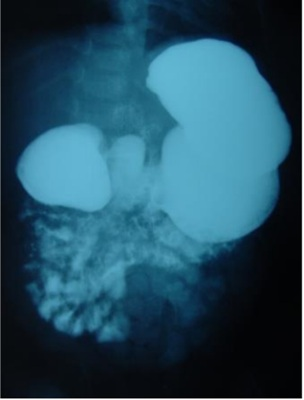
A Piloroplastia.
B Duodeno-duodeno anastomose.
C Hiatoplastia e fundoplicatura.
D Ranitidina e domperidona.
Questão 30 · Tumor Estromal Gastrointestinal GIST · 4000111145Homem, 54 anos de idade, apresentou hematêmese. Realizada endoscopia digestiva alta que evidenciou abaulamento no corpo gástrico (grande curvatura), com pequena úlcera e sinais de sangramento recente. Biópsia revelou tratar-se de tumor estromal do trato gastrointestinal (GIST). Tomogra a de tórax e abdome: lesão de 10cm na grande curvatura/corpo gástrico, sem invasões de estruturas adjacentes. Sem sinais de lesões hepáticas ou pulmonares, ascite ou implantes peritoneais. Qual é a melhor conduta?
A Gastrectomia sem linfadenectomia.
B Gastrectomia com linfadenectomia.
C Quimio-radioterapia neoadjuvante.
D Quimioterapia neoadjuvante.
Questão 31 · Anatomia da Região Inguinal · Cirurgia · 4000111124Mulher, 80 anos de idade, com história de dor e abaulamento na região inguino-crural esquerda conforme ilustra a figura a seguir. Foi submetida a tratamento operatório conforme demonstrado na figura a seguir. Cite as estruturas anatômicas assinaladas:
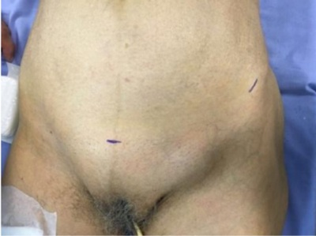
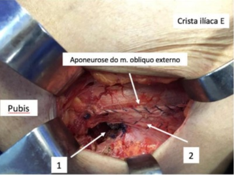
A 1. Anel inguinal externo; 2. Ligamento pectíneo.
B 1. Anel femoral; 2. Ligamento pectíneo.
C 1. Anel inguinal externo; 2. Ligamento inguinal.
D 1. Anel femoral; 2. Ligamento inguinal.
Questão 32 · Trauma Abdominal Penetrante · Cirurgia · 4000111075Homem, 37 anos de idade, foi vítima de ferimento por arma branca (faca de cozinha) na região periumbilical há 1 hora. Admitido no serviço: A: Falando (hálito etílico), saturação de 96% em ar ambiente; B: Sem alterações; C: FC: 76bpm, PA: 140x70 mmHg. Realizado FAST: negativo; D: Glasgow 15; E: Obeso (IMC 41kg/m²), com ferimento na parede anterior do abdome, de 2cm, próximo à cicatriz umbilical, sem sangramento ativo, com dor apenas no local. Dorso sem alterações. Qual é a melhor conduta?
A Tomografia de abdome.
B Laparoscopia diagnóstica.
C Repetir FAST em 6 horas.
D Radiografia de abdome em 3 posições.
Questão 33 · Avaliação Inicial Vias aéreas Ventilação e Choque · Cirurgia · Trauma Abdominal e Pélvico · 4000111061Homem, 27 anos de idade, foi admitido no Serviço de Emergência após colisão de automóvel contra anteparo xo. A: via aérea pérvia. Saturação de oxigênio de 92% em ar ambiente; B: dor à palpação do tórax à direita na região inferior e linha axilar média. Hematoma e crepitação no local da dor; C: FC:90bpm e PA: 130x70mmHg. D: Glasgow de 15. Pupilas sem alterações; E: Diurese clara. Dorso sem alterações. Abdome indolor a palpação. Realizada tomogra a de abdome demonstrada a seguir: Qual é a melhor conduta?
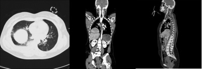
A Laparotomia.
B Arteriografia.
C Drenagem torácica.
D Toracotomia.
Questão 34 · Traumatismo Urológico · Cirurgia · 4000111029Homem, 59 anos de idade, foi vítima de atropelamento por automóvel com velocidade estimada em 40km/h. Admitido no serviço com: A: via aérea pérvia, saturação de 97% ar ambiente; B: ausculta e expansibilidade pulmonar simétricas; C: FC: 80bpm; PA: 110 x 70mmHg; D: Glasgow de 15. Sem alterações de pupilas; E: Dor abdominal na fossa ilíaca direita e supra- púbica. Presença de hematúria. Dor na região coxo-femoral direita com deformidade do membro inferior direito. Realizada tomografia do abdome com os seguintes achados: Qual é a melhor conduta no trauma abdominal?
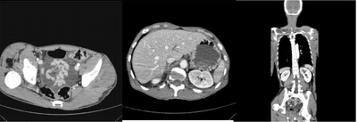
A Cistoscopia.
B Laparoscopia.
C Embolização.
D Sondagem vesical.
Questão 35 · Técnicas de Hemostasia Endoscópica · Classif icação de Forrest · 4000111005Hemorragia por Úlcera Péptica HDA por DUP Homem, de 64 anos, portador de cirrose alcoólica, vem ao Pronto-Socorro referindo vômitos com sangue em grande quantidade. Nega antecedente de hemorragia digestiva. Realizada endoscopia digestiva alta com achado de varizes em esôfago e fundo gástrico, de médio calibre e úlcera gástrica pré-pilórica Forrest 2A. Qual é a taxa aproximada de ressangramento e a conduta indicada?
A 10%, tratamento da úlcera com esclerose com argônio.
B 30%, tratamento das varizes com terlipressina.
C 45%, tratamento da úlcera com clip e esclerose.
D 50%, tratamento das varizes com esclerose.
Questão 36 · Apendicite Aguda · Cirurgia · 4000110988Homem, 37 anos de idade, refere dor abdominal na fossa ilíaca direita há 12 dias, acompanhada de febre de até 38ºC, perda de apetite e queda do estado geral. Procurou o serviço de urgência por duas vezes e há 6 dias foi iniciado cipro oxacino devido à hipótese de infecção urinária. Retorna hoje ao Pronto-Socorro devido a persistência do quadro. Ao exame clínico: Regular estado geral, febril, FC:90 bpm, PA: 130x80 mmHg; Tórax sem alterações. Abdome ácido, massa palpável de cerca de 10cm na fossa ilíaca e anco direito, dor localizada na região da massa. Sem sinais de irritação peritoneal. Toque retal sem alterações. Exames laboratoriais: Hb: 14,6 g/dL; Leuco: 26,57 mil/mm³; PCR: 324mg/dL; Creat: 1,37 mg/dl; Ureia: 51 mg/dl; demais exames normais. Realizada tomografia de abdome (imagens a seguir): Qual é o melhor tratamento?

A Laparotomia exploradora e apendicectomia.
B Apendicectomia por incisão de McBurney.
C Drenagem da coleção por laparotomia mediana.
D Drenagem percutânea da coleção.
Questão 37 · Litíase biliar · Tratamento Cirúrgico · 4000110971Primigesta, 28 anos de idade, com 14 semanas de gestação, apresentou quadro de dor abdominal de forte intensidade na região do epigastro com irradiação para dorso, acompanhada de vômitos. Exames laboratoriais confirmaram pancreatite aguda. Apresentou boa aceitação da dieta no 3º dia após os sintomas, além de normalização de todos os exames laboratoriais. Realizado ultrassom de abdome superior que evidenciou múltiplos cálculos na vesícula biliar de 0,2 a 0,5cm, sem dilatação da via biliar. Qual é a conduta neste momento?
A Ultrassom endoscópico.
B Colangiografia endoscópica com avental de chumbo.
C Acompanhamento clínico pré-natal.
D Colecistectomia.
Questão 38 · Cirurgia · Exames Diagnósticos e Tratamento · 4000110943Homem, 54 anos de idade, apresenta icterícia, colúria e acolia fecal há 10 dias. Sem febre ou perda de peso. Nega alteração de hábito intestinal. Nega comorbidades. Exame físico sem alterações, exceto icterícia; Exames laboratoriais: Hb: 14,6 g/dL, Leuco: 9,32 mil/mm³; TGO: 168 U/L ; FA: 469 U/L ; GGT: 678 U/L ; BT: 9,64 mg/dL; BD: 8,5 mg/dL; Ultrassom de abdome: Vesícula biliar repleta de cálculos. Dilatação das vias biliares intra e extra-hepática, porém difícil caracterização do colédoco distal devido a interposição gasosa. Corpo do pâncreas sem alterações e difícil caracterização da cabeça. Fígado sem alterações. Qual dever ser o próximo passo?
A Colecistectomia com colangiografia.
B Colangioressonância.
C Colangiografia endoscópica.
D Papilotomia endoscópica.
Questão 39 · Fáscias e Músculos · Cirurgia · 4000110914Mulher, 73 anos de idade, refere dor abdominal de início súbito e abaulamento progressivo no anco esquerdo há 1 dia. Nega alterações do hábito intestinal e urinárias. Está em tratamento para exacerbação da doença pulmonar obstrutiva crônica há 5 dias, porém com persistência da tosse. Tem hipertensão arterial controlada com medicamentos e brilação atrial em uso de anticoagulante. Ao exame físico: Bom estado geral, temperatura de 37,7ºC; Tórax com raros roncos e sibilos; Abdome ácido e sem sinais de irritação peritoneal. Massa endurecida e dolorosa na região do anco esquerdo de aproximadamente 15cm. Exames laboratoriais: Hb: 10,5 g/dL, Ht: 30%; Leucócitos: 13,54 mil/mm³; PCR: 34 mg/dL; Realizada tomografia de abdome (imagem a seguir): Qual é a melhor conduta?
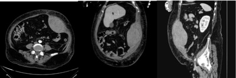
A Drenagem operatória.
B Drenagem percutânea.
C Observação clínica.
D Biópsia incisional.
Questão 40 · Diarreia · Cirurgia · 4000110890Mulher, 64 anos de idade, se queixa de dor abdominal difusa de forte intensidade há 24 horas, acompanhada de febre e diarreia sem sangue. Nega sintomas urinários. Antecedente de internação prévia há 1 mês devido a pneumonia. Refere tabagismo. Tem hipertensão arterial sistêmica e diabete melito, controlados com medicamentos. Ao exame físico: Regular estado geral, FC:110 bcp, FR: 16, PA: 100x70 mmHg; Ausculta torácica sem alterações. Abdome distendido, doloroso com sinais de irritação peritoneal difusamente. Exames bioquímicos: Hb: 11,3 g/dL; Leuco: 19,57 mil/mm³; PCR: 60mg/dL; Creat: 2,19 mg/dL; Ureia: 141 mg/dl; Lactato: 28 mg/dL; Gasometria sem outras alterações; Tomografia de abdome: Qual é a principal hipótese diagnóstica?
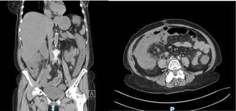
A Colite pseudomembranosa.
B Trombose venosa mesentérica.
C Úlcera péptica perfurada.
D Diverticulite complicada.
Questão 41 · Medidas de Associação e Medidas de Impacto · 4000110874No sentido de quanti car a associação entre consumo de laticínios, doença cardiovascular e óbito foi realizado um estudo multicêntrico, que acompanhou por 15 anos grupo de 136.000 indivíduos entre 35 e 70 anos de idade, em 21 países. Os participantes foram divididos entre os que não consumiram laticínios e aqueles que os consumiram. Os dados que seguem resumem os principais resultados do estudo. Tabela X. Associação entre consumo diário de laticínios (CDL) e eventos clínicos. Obs: *= intervalo de 95% de confiança; # = Hazard ratio; &= grupo de referência para HR; Fonte: Lancet 2018; 392: 2288-97. Qual é a alternativa correta quanto ao consumo de laticínios?
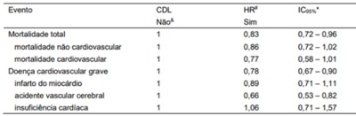
A Aumentou o risco de óbito.
B Aumentou o risco de insuficiência cardíaca.
C Reduziu o risco de doença cardiovascular grave.
D Diminuiu o risco de infarto do miocárdio.
Questão 42 · Sensibilidade · 4000110767Aplicou-se questionário para identi car indivíduos com apneia do sono em 1.800 indivíduos do sexo masculino, com idade média de 52 anos (dp=±9 anos) e IMC de 33,8 (dp=± 4kg/m²); obtidos em clínicas especializadas em distúrbios do sono. Neste grupo apresentou o seguinte desempenho sensibilidade (S) de 97% e especi cidade (E) de 13%. Este mesmo questionário foi aplicado em população jovem onde esta doença atinge cerca de 1% do grupo. Qual alternativa re ete corretamente comportamento esperado deste questionário?
A Aumentará apenas a especificidade.
B Diminuirá apenas a sensibilidade.
C Diminuirá sensibilidade e aumentará especificidade.
D Manterá mesma sensibilidade.
Questão 43 · Prevenção · 4000110750Maria, 56 anos, foi mordida na perna pelo cachorro da vizinha. No momento do acidente, a paciente realizou limpeza com água e sabão e manteve suas atividades domésticas. Cerca de 9 horas após o acidente, foi à Unidade Básica de Saúde (UBS) onde foi atendida pela enfermeira. A enfermeira coletou a informação de que o cachorro era conhecido e habitava a casa da vizinha, avaliou tratar-se de ferimento super cial, sem sangramento, constituído por pontos perfurantes correspondentes a mordedura. Qual é a conduta?
A Encaminhar para realizar vacinação antirrábica em Maria.
B Manter observação do cão por 10 dias.
C Encaminhar para realizar vacinação e soro antirrábico em Maria.
D Encaminhar para realizar vacinação antirrábica em Maria se o cão não foi vacinado.
Questão 44 · Medidas de Associação e Medidas de Impacto · 4000110734A força isocinética foi medida em 200 homens e mulheres saudáveis de 45 a 78 anos de idade para examinar a relação entre força muscular, idade e composição corporal. O pico de torque foi medido a 60 e 240 graus/s no joelho e a 60 e 180 graus/s no cotovelo usando o dinamômetro Cybex II®. A massa isenta de gordura (MIG) foi estimada por pesagem hidrostática em todos os sujeitos, e a mesma massa muscular (MM) foi determinada em 141 indivíduos a partir da excreção de creatinina urinária. Observou-se que a MIG e MM foram menores no grupo dos mais velhos (p<0,001). A força de todos os grupos musculares foi menor em mulheres e nos mais velhos (p<0,006), mas quando ajustada para MIG ou MM, estas diferenças não se mostraram significantes. Estes dados sugerem que o MM é um principal determinante das diferenças relacionadas à idade e sexo na força muscular esquelética. (Journal of Applied Physiology 7 (2), 644-50) Qual das medidas de associação a seguir pode ser utilizada neste tipo de estudo?
A Risco atribuível.
B Hazard ratio.
C Risco relativo.
D Razão de prevalência.
Questão 45 · Filtro especial identif icando o tipo de estudo epidemiológico pela descrição da metodologia · 4000110720A força isocinética foi medida em 200 homens e mulheres saudáveis de 45 a 78 anos de idade para examinar a relação entre força muscular, idade e composição corporal. O pico de torque foi medido a 60 e 240 graus/s no joelho e a 60 e 180 graus/s no cotovelo usando o dinamômetro Cybex II®. A massa isenta de gordura (MIG) foi estimada por pesagem hidrostática em todos os sujeitos, e a mesma massa muscular (MM) foi determinada em 141 indivíduos a partir da excreção de creatinina urinária. Observou-se que a MIG e MM foram menores no grupo dos mais velhos (p<0,001). A força de todos os grupos musculares foi menor em mulheres e nos mais velhos (p<0,006), mas quando ajustada para MIG ou MM, estas diferenças não se mostraram significantes. Estes dados sugerem que o MM é um principal determinante das diferenças relacionadas à idade e sexo na força muscular esquelética. (Journal of Applied Physiology 7 (2), 644-50) Qual é o delineamento deste estudo? A) Transversal. B) Coorte. C) Caso-controle. D) Experimental.
A Transversal.
B Coorte.
C Caso-controle.
D Experimental.
Questão 46 · Letalidade · Incidência · Mortalidade · 4000110701Qual a alternativa que corresponde, respectivamente, aos indicadores de saúde estimados a partir das informações a seguir, visto que foram obtidos os seguintes valores: 5/100.00; 1/100.000 e 20%? Quadro. Casos notificados e óbitos por meningite bacteriana no Estado de São Paulo, no ano de 2013. Dados modificados para facilitar cálculos: *População residente em 2012, estimativa pelo IBGE. Fonte: SINAN/DDTR/CVE/CCD/SES-S

A Taxa de Letalidade, Coeficientes de Mortalidade e de Incidência.
B Coeficientes de Prevalência, de Mortalidade e Taxa de Letalidade.
C Coeficientes de Incidência, de Mortalidade e Taxa de Letalidade.
D Coeficientes de Incidência, de Mortalidade e de Prevalência.
Questão 47 · Atributos gerais da Atenção Primária à Saúde APS · 4000110647É reconhecido que a saúde de indivíduos é determinada pela interação de fatores físicos, mentais, sociais e espirituais. Por que a religiosidade e espiritualidade são aspectos importantes a considerar no enfrentamento da doença?
A É necessário tornar o ambiente clínico imune a influências de aspectos religiosos ou espiritualistas, os quais prejudicam a eficácia terapêutica.
B O uso da religiosidade para lidar com a doença pode mobilizar atitudes e iniciativas positivas e também negativas, com potencial de impacto para a melhoria ou piora da qualidade de vida das pessoas em tratamento.
C É necessário evitar que a religiosidade interfira na terapêutica, protegendo o paciente de eventuais efeitos depreciativos sobre suas convicções religiosas.
D A religiosidade pode mobilizar atitudes positivas e também negativas, mas seu potencial de impacto é indiferente para a melhoria ou piora da qualidade de vida das pessoas em tratamento.
Questão 48 · Avaliação em Saúde · 4000110560Segundo o Sistema Único de Saúde (SUS), qual é um dos objetivos das agências de Avaliação de Tecnologias em Saúde?
A Reduzir os custos decorrentes dos processos de decisão sobre incorporação de novas tecnologias no Sistema de Saúde.
B Fornecer aos fabricantes de medicamentos informações que auxiliem nos processos de decisão sobre incorporação de tecnologias no Sistema de Saúde.
C Impedir a incorporação de novas tecnologias que não apresentem uma relação de custo-efetividade aceitável.
D Assegurar que as novas tecnologias incorporadas no Sistema de Saúde sejam seguras, efetivas e eficientes.
Questão 49 · Relação MédicoPaciente · 4000110531Qual a afirmação correta relacionada aos aspectos comunicacionais da relação médico-paciente?
A As habilidades comunicacionais do profissional resultam em: formação de vínculo entre o médico e o paciente; aumento da precisão diagnóstica; determinação da autonomia do médico nas tomadas de decisão e maior adesão ao tratamento.
B Empatia diz respeito à disponibilidade interna para o contato emocional, capacidade de compreensão das vivências do outro e possibilidade de comunicação desse entendimento.
C A transferência é um fenômeno inconsciente, em que há projeção de traços de memória de personagens do passado e repetição de padrões de comportamento sobre pessoas com as quais se estabelece relações no presente, portanto não diz respeito a processos comunicacionais.
D A dimensão subjetiva do adoecimento interfere no reto raciocínio diagnóstico do médico e, por isso, o profissional deve evitar essa ""contaminação"" no processo de comunicação com o paciente.
Questão 50 · Princípios e Diretrizes do Sistema Único de Saúde SUS · 4000110511Considere os princípios e diretrizes do SUS e a situação atual do expressivo número de refugiados que estão atravessando a fronteira brasileira na região norte do país. Qual é a afirmação correta?
A Os refugiados, não sendo cidadãos brasileiros, não representam demanda potencial por atenção nos serviços de saúde, apesar de criarem novo cenário epidemiológico que demanda ações de vigilância e articulação com setores envolvidos em políticas sociais.
B Os refugiados, não sendo cidadãos brasileiros, não representam demanda potencial por atenção nos serviços de saúde; mas demandam ações de vigilância epidemiológica a cargo de organismos internacionais (OPAS, OMS) que serão integradas a outros setores envolvidos em políticas sociais.
C Ações de vigilância epidemiológica e articulação com outros setores envolvidos em políticas sociais devem ser desenvolvidas para o potencial aumento de demanda por atenção nos serviços de saúde.
D Embora não tragam impactos diretos ao setor saúde, os refugiados representarão impacto indireto, pois as mudanças sócio sanitárias certamente impactarão nas demandas por atenção à saúde, açôes de vigilância epidemiológica e políticas inter- setoriais de impacto na saúde.
Questão 51 · Valor Preditivo Positivo · 4000110489Qual a afirmativa correta com relação às propriedades de um teste diagnostico?
A Quanto mais sensível maior é a redução de falsos positivos.
B Quanto menor a prevalência menor o valor preditivo positivo.
C Quanto mais específico maior é a redução de falsos negativos.
D Quanto maior a prevalência maior o valor preditivo negativo.
Questão 52 · Mortalidade · 4000110471Qual é a definição correta para indicador de mortalidade?
A Mortalidade proporcional é a razão entre os óbitos por dada doença e o total de óbitos ocorridos em dado período.
B Mortalidade proporcional é a razão entre os óbitos em dada faixa etária e o total de óbitos ocorridos em dado período.
C Mortalidade infantil é a razão entre os óbitos de menores de um ano, e o total de óbitos ocorridos em dado período.
D Letalidade é o número de óbitos decorrentes de uma doença considerando o total de óbitos ocorridos em dado período.
Questão 53 · Seguimento do tratamento · Vacinação · Prevenção · 4000110447Considerando os objetivos do desenvolvimento sustentável da OMS, além da vacinação com BCG, quais das seguintes ações programáticas são propostas como estratégias para melhoria dos indicadores de saúde para a tuberculose?
A Tratar sintomáticos respiratórios.
B Tratar a infecção latente para todos os contatos.
C Confirmar cura dos casos.
D Tratar reatores ao teste tuberculínico.
Questão 54 · Epidemiologia · 4000110428As Doenças Tropicais Negligenciadas (DTN) constituem grupo heterogêneo de enfermidades, com características comuns listadas em publicação de 2018 da Organização Mundial da Saúde. Em relação à ocorrência das DTN's no Brasil, qual é a afirmativa correta?
A Aumento da incidência de oncocercose na região nordeste.
B Incidência de leishmaniose visceral estável.
C Eliminação da raiva humana transmitida por cães.
D Maior prevalência de tracoma nas periferias das grandes cidades.
Questão 55 · Prevenção Primária · 4000110408Durante atendimento de pré-natal de baixo risco, primigesta recebe orientação alimentar, indicação para cessar tabagismo e solicitação para realizar sorologia de sí lis e HIV. Realiza vacina para tétano. Segundo o modelo clássico de Leavell & Clark, qual das alternativas abaixo traz a correspondência correta entre a medida adotada e seu nível de prevenção?
A Medida adotada: Orientação alimentar/Nível de prevenção: Secundário
B Medida adotada: Cessação do tabagismo/Nível de prevenção: Secundário
C Medida adotada: Sorologia para sífilis/Nível de prevenção: Terciário
D Medida adotada: Vacinação/Nível de prevenção: Primário
Questão 56 · Atributos gerais da Atenção Primária à Saúde APS · 4000110379O estudo histórico dos processos de adoecimento e das demandas de saúde da população brasileira traz em seus objetivos a possibilidade de reflexão frente aos contextos em que tais processos e demandas são produzidos, em meio a rupturas e permanências históricas. Neste contexto, qual a afirmação correta?
A As chamadas ""artes de curar"" se apresentam ainda hoje como relevantes na formação geral da população brasileira, ainda que em contextos conflitantes, contribuindo ativamente para a conformação de práticas de cuidado, com suas atitudes de acolhimento, concepções de adoecimento e estratégias de cura.
B A história de formação sociocultural brasileira produziu uma série de concepções populares em torno dos adoecimentos e suas causas, produzindo aquilo que entendemos por ""artes de curar"", mas essas foram completamente suplantadas e desconsideradas pela chamada medicina tradicional, não existindo mais suas práticas e representações.
C A Saúde Pública no Brasil teve como eixo formador a identificação das representações populares como nucleares em sua produção tecnológica, o que teria redundado numa perspectiva de cunho sempre popular, pouco afeita às influências advindas do campo médico e de instituições internacionais.
D A Medicina no Brasil foi criada, a partir do século XIX, num contexto circular, sempre tendo em conta e sem conflitos, as dimensões do mundo popular, das cidades e das áreas rurais, criando tecnologias apropriadas no sentido de dar conta de todas as demandas nacionais, incluindo seus profissionais no mundo político e social do país.
Questão 57 · Política Nacional de Atenção Básica PNAB · 4000110343O Núcleo de Apoio à Saúde da Família (NASF) é importante dispositivo à organização do sistema de atenção à saúde no Brasil. Quais são seus objetivos?
A Suprir a atenção básica com especialistas para ampliar a cobertura de casos complexos.
B Incrementar e ampliar a referência e contra referência de casos.
C Ampliar a abrangência das ações da atenção básica, bem como sua resolubilidade.
D Encaminhar os casos que necessitam atendimento especializado.
Questão 58 · Método SOAP · 4000110324Josefa é uma mulher negra de 62 anos de idade que frequenta a unidade básica de saúde há muitos anos. Ela era acompanhada por diabetes e hipertensão arterial, ambas as condições com bom controle clínico. Há cerca de 10 dias, Josefa foi ao Pronto-Socorro devido um desmaio seguido de perda de força em braço e perna esquerdos. Foi encaminhada a hospital terciário, com hipótese de acidente vascular, encefálico (AVE). Esta hipótese diagnóstica foi confirmada com tomogra a. Ela recebeu cuidados adequados e teve alta hospitalar, ainda com alguma perda de força em perna esquerda. Hoje ela vêm em consulta e traz os documentos que recebeu na alta hospitalar, além da prescrição medicamentosa: Encaminhamento ao endocrinologista, por diabetes mellitus; Encaminhamento ao cardiologista, por hipertensão arterial sistêmica; Encaminhamento ao fisioterapeuta, para reabilitação pós-AVE; Retorno no neurologista do hospital em um mês; Durante a consulta, Josefa mostra-se preocupada com o custo dos remédios prescritos no hospital e di culdade de ir às consultas. Chora ao falar das suas di culdades. Ela mora com uma lha e três netos. No momento, sua lha está desempregada e era Josefa quem trabalhava como diarista para pagar as contas. Um de seus netos está envolvido com drogas e álcool e isso preocupa muito Josefa. Tem irmãos que moram em cidades vizinhas, porém sem tanta proximidade, Josefa mora em uma viela no morro, e para chegar na sua casa é preciso subir uma escada estreita e íngreme. Hoje ela teve muita dificuldade de descer os degraus para ir a UBS. O médico escuta Josefa, realiza exame clínico que constata hemiparesia desproporcionada à esquerda, com força muscular grau V em membro superior e grau III em membro inferior. O restante do exame clínico é normal. Conversa com Josefa e propõe seguir o tratamento da diabetes e hipertensão na própria UBS. Troca alguns medicamentos de sua prescrição por outros de mesmas classes disponíveis na UBS. escreve contra-referência para o hospital informando a troca de medicação e seguimento da hipertensão e diabetes na UBS, cancelando estes encaminhamentos. Planeja discutir o caso com equipe multidisciplinar para acionar o sioterapeuta pensando na reabilitação de Josefa e assistente social para discutir indicação de benefícios aplicáveis. Por m, combina retorno precoce com Josefa na UBS para conversar sobre a adaptação dela e da sua família a este novo ciclo de vida. De acordo com a sistematização do registro clínico orientado a problemas (modelo SOAP), qual das opções abaixo apresenta em todos os campos itens corretamente registrados para esta consulta?
A S: Preocupada com custo dos medicamentos / O: Hemiparesia / A: Acidente vascular encefálico / P: Discussão com equipe multidisciplinar.
B S: Medo de doença / O: Diabetes e hipertensão / A: Acidente vascular encefálico / P: Retorno precoce para reavaliação.
C S: Medo de doença / O: Hemiparesia / A: Divergência com especialista / P: Discussão com equipe multidisciplinar.
D S: Preocupada com custo dos medicamentos / O: Diabetes e hipertensão / A: Divergência com especialista / P: Retorno precoce para reavaliação.
Questão 59 · Princípios e Diretrizes do SUS a serem operacionalizados pela Atenção Básica · Prevenção Quaternária · 4000110274Josefa é uma mulher negra de 62 anos de idade que frequenta a unidade básica de saúde há muitos anos. Ela era acompanhada por diabetes e hipertensão arterial, ambas as condições com bom controle clínico. Há cerca de 10 dias, Josefa foi ao Pronto-Socorro devido um desmaio seguido de perda de força em braço e perna esquerdos. Foi encaminhada a hospital terciário, com hipótese de acidente vascular, encefálico (AVE). Esta hipótese diagnóstica foi confirmada com tomogra a. Ela recebeu cuidados adequados e teve alta hospitalar, ainda com alguma perda de força em perna esquerda. Hoje ela vêm em consulta e traz os documentos que recebeu na alta hospitalar, além da prescrição medicamentosa: Encaminhamento ao endocrinologista, por diabetes mellitus; Encaminhamento ao cardiologista, por hipertensão arterial sistêmica; Encaminhamento ao fisioterapeuta, para reabilitação pós-AVE; Retorno no neurologista do hospital em um mês; Durante a consulta, Josefa mostra-se preocupada com o custo dos remédios prescritos no hospital e di culdade de ir às consultas. Chora ao falar das suas di culdades. Ela mora com uma lha e três netos. No momento, sua lha está desempregada e era Josefa quem trabalhava como diarista para pagar as contas. Um de seus netos está envolvido com drogas e álcool e isso preocupa muito Josefa. Tem irmãos que moram em cidades vizinhas, porém sem tanta proximidade, Josefa mora em uma viela no morro, e para chegar na sua casa é preciso subir uma escada estreita e íngreme. Hoje ela teve muita dificuldade de descer os degraus para ir a UBS. O médico escuta Josefa, realiza exame clínico que constata hemiparesia desproporcionada à esquerda, com força muscular grau V em membro superior e grau III em membro inferior. O restante do exame clínico é normal. Conversa com Josefa e propõe seguir o tratamento da diabetes e hipertensão na própria UBS. Troca alguns medicamentos de sua prescrição por outros de mesmas classes disponíveis na UBS. escreve contra-referência para o hospital informando a troca de medicação e seguimento da hipertensão e diabetes na UBS, cancelando estes encaminhamentos. Planeja discutir o caso com equipe multidisciplinar para acionar o sioterapeuta pensando na reabilitação de Josefa e assistente social para discutir indicação de benefícios aplicáveis. Por m, combina retorno precoce com Josefa na UBS para conversar sobre a adaptação dela e da sua família a este novo ciclo de vida. Com relação ao cancelamento dos encaminhamentos para o endocrinologista e o cardiologista, realizados pelo médico da UBS, é correto afirmar:
A Foi uma conduta correta, pois apesar de Josefa se beneficiar deste seguimento especializado, poderia reduzir o acesso de outros pacientes.
B Foi uma conduta correta, pois se a paciente tinha bom controle clínico, não há necessidade atual para este seguimento especializado.
C Foi uma conduta incorreta, pois a interferência na autonomia de prescrição de outro colega é infração prevista no Código de Ética Médica.
D Foi uma conduta incorreta, pois não ir a essas consultas pode prejudicar o acompanhamento de Josefa com a equipe da neurologia.
Questão 60 · Método Clínico Centrado na Pessoa · 4000110213Josefa é uma mulher negra de 62 anos de idade que frequenta a unidade básica de saúde há muitos anos. Ela era acompanhada por diabetes e hipertensão arterial, ambas as condições com bom controle clínico. Há cerca de 10 dias, Josefa foi ao Pronto-Socorro devido um desmaio seguido de perda de força em braço e perna esquerdos. Foi encaminhada a hospital terciário, com hipótese de acidente vascular, encefálico (AVE). Esta hipótese diagnóstica foi confirmada com tomogra a. Ela recebeu cuidados adequados e teve alta hospitalar, ainda com alguma perda de força em perna esquerda. Hoje ela vêm em consulta e traz os documentos que recebeu na alta hospitalar, além da prescrição medicamentosa: Encaminhamento ao endocrinologista, por diabetes mellitus; Encaminhamento ao cardiologista, por hipertensão arterial sistêmica; Encaminhamento ao fisioterapeuta, para reabilitação pós-AVE; Retorno no neurologista do hospital em um mês; Durante a consulta, Josefa mostra-se preocupada com o custo dos remédios prescritos no hospital e di culdade de ir às consultas. Chora ao falar das suas di culdades. Ela mora com uma lha e três netos. No momento, sua lha está desempregada e era Josefa quem trabalhava como diarista para pagar as contas. Um de seus netos está envolvido com drogas e álcool e isso preocupa muito Josefa. Tem irmãos que moram em cidades vizinhas, porém sem tanta proximidade, Josefa mora em uma viela no morro, e para chegar na sua casa é preciso subir uma escada estreita e íngreme. Hoje ela teve muita dificuldade de descer os degraus para ir a UBS. O médico escuta Josefa, realiza exame clínico que constata hemiparesia desproporcionada à esquerda, com força muscular grau V em membro superior e grau III em membro inferior. O restante do exame clínico é normal. Conversa com Josefa e propõe seguir o tratamento da diabetes e hipertensão na própria UBS. Troca alguns medicamentos de sua prescrição por outros de mesmas classes disponíveis na UBS. escreve contra-referência para o hospital informando a troca de medicação e seguimento da hipertensão e diabetes na UBS, cancelando estes encaminhamentos. Planeja discutir o caso com equipe multidisciplinar para acionar o sioterapeuta pensando na reabilitação de Josefa e assistente social para discutir indicação de benefícios aplicáveis. Por m, combina retorno precoce com Josefa na UBS para conversar sobre a adaptação dela e da sua família a este novo ciclo de vida. Qual dos componentes do método clínico centrado na pessoa foi mais acionado para abordar as di culdades da Josefa com o uso da medicação?
A Acolhimento e escuta qualificada.
B Fortalecendo a relação entre a pessoa e o médico.
C Elaborando um plano conjunto de manejo dos problemas.
D Entendendo a pessoa como um todo.
Questão 61 · Pneumopatia Intersticial Usual PIU Fibrose Pulmonar Idiopática FPI · 4000110054Mulher de 69 anos de idade, natural e procedente de São Paulo é dentista. Tabagista de 20 maços-ano, apresenta dispneia e tosse seca há 2 anos, sem outras queixas. No exame clínico apresenta saturação de oxigênio de 90% em ar ambiente e estertores em velcro bilaterais, sendo o restante do exame clínico normal. A radiogra a e tomogra a de tórax estão a seguir. A espirometria mostra VEF1 e CVF diminuídos com relação VEF1/CVF preservada. Qual é a principal hipótese diagnóstica?

A Fibrose intersticial pulmonar idiopática.
B Doença pulmonar obstrutiva crônica.
C Pneumoconíose.
D Tuberculose pulmonar.
Questão 62 · Diagnóstico · 4000110019Mulher, 52 anos de idade, veio trazida ao Pronto-Socorro por queixa de cefaleia e uma crise tônico-clônica generalizada que ocorreu dois dias antes da admissão. Em seguida evoluiu com sonolência. Ao exame de admissão tem temperatura de 38ºC, PA 100x60 mmHg, FC: 112bpm e restante do exame clínico geral sem alterações. No exame neurológico, encontrava-se sonolenta, com abertura ocular aos estímulos verbais vigorosos, retirada inespecí ca dos membros à dor, falando palavras desconexas, reflexos profundos globalmente vivos e reflexo cutâneo plantar em exão bilateral. Também foram observadas algumas clonias em hemiface direta. Tomogra a computadorizada de crânio mostrou uma hipoatenuação em lobo temporal esquerdo. Exames laboratoriais revelaram uma leucocitose de 13500 sem desvios à esquerda e um aumento da proteína C reativa. Foi então submetida a ma punção lombar para coleta de líquor cujo resultado foi de 41 células (66% de linfócitos, 32% de monócitos e 2% de neutró los), 48 hemácias, proteína de 59 mg/dL, glicose de 64 mg/dL e lactato de 25 mg/dL. Qual é a principal hipótese diagnóstica?

A Meningoencefalite por tuberculose.
B Meningoencefalite por HIV.
C Meningoencefalite por herpes.
D Meningoencefalite por linfoma.
Revisar: possível letra faltando em enunciado
Questão 63 · Escala de Coma de Glasgow · Neurologia · 4000109971Mulher, 52 anos de idade, veio trazida ao Pronto-Socorro por queixa de cefaleia e uma crise tônico-clônica generalizada que ocorreu dois dias antes da admissão. Em seguida evoluiu com sonolência. Ao exame de admissão tem temperatura de 38ºC, PA 100x60 mmHg, FC: 112bpm e restante do exame clínico geral sem alterações. No exame neurológico, encontrava-se sonolenta, com abertura ocular aos estímulos verbais vigorosos, retirada inespecí ca dos membros à dor, falando palavras desconexas, reflexos profundos globalmente vivos e reflexo cutâneo plantar em exão bilateral. Também foram observadas algumas clonias em hemiface direta. Tomogra a computadorizada de crânio mostrou uma hipoatenuação em lobo temporal esquerdo. Exames laboratoriais revelaram uma leucocitose de 13500 sem desvios à esquerda e um aumento da proteína C reativa. Foi então submetida a ma punção lombar para coleta de líquor cujo resultado foi de 41 células (66% de linfócitos, 32% de monócitos e 2% de neutró los), 48 hemácias, proteína de 59 mg/dL, glicose de 64 mg/dL e lactato de 25 mg/dL. Qual é a pontuação dessa paciente pela escala de coma de Glasgow?

A 8.
B 10.
C 12.
D 14.
Revisar: possível letra faltando em enunciado
Questão 64 · Síndromes Sensitivas · 4000109866Mulher, de 23 anos de idade, procurou o Pronto-Socorro com a queixa de ""sensação estranha de fraqueza nas pernas"", também relata ""uma sensação de aperto, como uma faixa apertada na altura do eu umbigo"". Diz quer percebeu os sintomas há três dias, que inicialmente eram muito leves mas que pioraram progressivamente. Quando indagada, acha que também notou algum tipo de di culdade para controlar a micção. O exame clínico geral está normal. O exame neurológico mostra paresia crural direita (força muscular grau 4), perda da sensibilidade vibratória e aneurestésica no membro inferior direito, diminuição da percepção dolorosa e térmica em membro inferior esquerdo, sinal de Babinski á direita, os reflexos patelar a aquileu á direita estão exaltados. Qual a topografia responsável pelos achados do exame neurológico?
A Decussação das pirâmides.
B Cauda equina.
C Medula espinhal cervical à direita.
D Medula torácica baixa à direita.
Questão 65 · Tratamento Sintomático · Tratamento Prof ilático · 4000109842Homem de 52 anos de idade, tabagista, apresenta há alguns anos crises de forte dor de cabeça que se concentram principalmente no olho esquerdo. A cefaleia aparece de 2 em 2 anos quase sempre nesta época do ano e permanece por cerca de 45 a 60 dias, a dor dura geralmente 1 hora e na maioria das vezes aparece durante a madrugada despertando-o: ca absolutamente ""desesperado"" quando sente a dor e tem vontade de ""bater a cabeça na parede"". Durante a dor apresenta vermelhidão no olho esquerdo e lacrimejamento intenso desse lado. As crises atuais começaram há 15 dias realizou uma tomografia durante um período de crises, que era normal. Considerando a principal hipótese diagnóstica, o que é correto afirmar?
A Devemos prescrever Prednisona via oral durante 2 a 3 semanas.
B Trata-se de uma cefaleia primária responsiva à Indomectacina.
C As crises intensas devem ser tratadas com Morfina endovenosa.
D Anti depressivo tricíclico deve melhorar esse tipo de dor de cabeça.
Questão 66 · Gastroenterologia · Hérnias Hiatais · 4000109810Mulher de 60 anos de idade refere dor epigástrica, tosse e náuseas após as refeições há cerca de 1 ano. Realizou uma radiografia de tórax com a imagem abaixo: Qual é o diagnóstico mais provável?
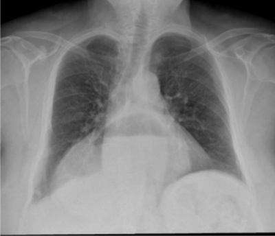
A Neoplasia esofágica.
B Abscesso pulmonar.
C Hérnia gástrica hiatal.
D Tuberculose.
Questão 67 · Antipsicóticos · 4000109783Paciente jovem apresentando quadro psicótico de início agudo, há dois dias foi levado ao Pronto-Socorro em estado de agitação psicomotora. Recebeu uma dose de haloperidol IM e saiu com prescrição de haloperidol 10 mg/dia por via oral. Atualmente está com piora da agitação. Não consegue se manter sentado durante a entrevista, ca em pé balançando o corpo de um lado para o outro e esfrega as mãos com uma fisionomia angustiada. Qual é a conduta?
A Aumentar a dose do antipsicótico.
B Ministrar benzodiazepínico e substituir antipsicótico.
C Associar medicação anticolinérgica.
D Suspender antipsicótico e fazer eletroconvulsoterapia.
Questão 68 · Retinopatia Diabética · 4000109744Dentre as alternativas abaixo, quais são as alterações mais precoces encontrados na retinopatia diabética?
A Ingurgitamento venoso.
B Exsudatos duros.
C Micro-hemorragias.
D Microaneurismas.
Questão 69 · Manif estações clínicas · Diagnóstico · Artrite reativa · 4000109723Homem de 27 anos de idade apresenta quadro de artropatia inflamatória de membros inferiores, associada às alterações de exame clínico mostradas a seguir. Considerando a principal hipótese diagnóstica, qual é a manifestação ocular mais comum?
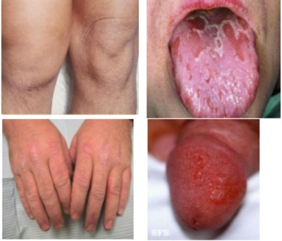
A Conjuntivite.
B Irite.
C Ceratite.
D Neurite.
Questão 70 · Tratamento · Artrite gonocócica · 4000109664Homem de 35 anos de idade procurou serviço de emergência por dor em joelho esquerdo há 1 dia. Refere febre e di culdade à deambulação pela dor. Refere episódios esporádicos de dor lombar, principalmente no m da tarde. Nega tabagismo, etilismo, uso de drogas e tem vida sexual ativa. Sem outras queixas anteriores. Ao exame: bom estado geral, corado, hidratado, temperatura 38ºC, PA 120x80mmHg, FC 100bpm, FR 24ipm, pulsos radiais palpáveis e simétricos. Joelho esquerdo com calor, edema e limitação da amplitude de movimento, sem hiperemia. Sem outras alterações do restante do exame clínico. Considerando a principal hipótese diagnóstica, qual deve ser o tratamento inicial?
A Alopurinol.
B Colchicina.
C Prednisona.
D Ceftriaxone.
Questão 71 · Diagnósticos dif erenciais · 4000109646Homem de 42 anos de idade com antecedente de hipertensão arterial, apresenta dor lombar crônica há cinco anos, após levantar peso no ambiente de trabalho. No episódio inicial apresentou dor intensa e súbita associada à limitação de movimentos que levou a afastamento do trabalho por um período de 10 dias. Voltou a trabalhar, porém, manteve dor lombar contínua, de intensidade leve a moderada com irradiação para ambas as coxas de forma difusa e piora com esforços. Vários períodos de afastamento laboral desde então, sempre com manutenção das queixas. Há 6 meses refere dor moderada a intensa com irradiação para ambos os membros inferiores e grande limitação para atividades diárias sem qualquer melhora com uso de anti-inflamatórios ou analgésicos. Faz uso eventual de tramadol, porém nega melhora significativa. Nega febre ou perda de peso. O exame clínico é normal exceto por dor à exão e extensão lombar. O exame neurológico é normal. Paciente traz exame de ressonância magnética realizado há 2 meses com desidratação discal L4-L5 e L5-S1. Discretas protrusões discais nestes níveis sem conflito radicular. Qual é a principal hipótese diagnóstica?
A Lombalgia mecânica comum.
B Estenose do canal lombar.
C Espondilite anquilosante.
D Hérnia discal.
Questão 72 · Introdução · Diagnóstico · 4000109627Mulher de 21 anos de idade procura o ambulatório por queixa de astenia e sonolência. Refere que suas menstruações ocorrem em ciclos regulares a cada 30 dias, com duração média de 10 dias e uxo abundante. Refere que este padrão se mantém desde a menarca, que ocorreu aos 13 anos de idade. Exame clínico normal, exceto por palidez 2+/4+. Exames laboratoriais: Quanto à alteração no coagulograma, qual é a principal hipótese diagnóstica?
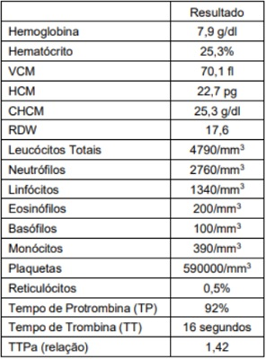
A Deficiência do fator VIII.
B Doença de Von Willebrand.
C Deficiência do fator XI.
D Trombastenia de Glanzmann.
Questão 73 · Transtornos de Personalidade · Transtorno de Personalidade Obsessivacompulsiva Anancástica · 4000109588Um estudante de direito de 28 anos é admitido no hospital por acidente automobilístico sem traumatismo craniano. Ele se mostra obstinado e rígido, exigindo que a equipe faça as coisas à sua maneira, mantendo suas tarefas acadêmicas no computador. Fala que sua namorada ameaçou deixá-lo caso ele continue com sua forma in exível de ser e não jogue fora coisas inúteis que costuma armazenar. Qual a principal hipótese diagnóstica quanto ao tipo de transtorno de personalidade?
A Antissocial.
B Evitador.
C Histriônico.
D Obsessivo-compulsivo.
Questão 74 · Imunodef iciências primárias · Imunodef iciências celulares ou de células T · 4000109570Imunodef iciências combinadas Mulher de 38 anos de idade refere quadros de infecções de vias aéreas superiores recorrentes há cinco anos. Está sempre com secreção nasal espessa amarelada e utiliza antibióticos frequentemente. Nos últimos dois anos também apresentou duas pneumonias documentadas e tratadas com antibióticos. Há seis meses com diarreia crônica, tendo perdido sete quilos. Ao exame clínico apresenta-se emagrecida e com linfoadenopatia cervical indolor. Traz consigo sorologia para o vírus HIV que é negativa. Qual é a principal hipótese diagnóstica?
A Doença Granulomatosa Crônica.
B Neutropenia cíclica de início tardio.
C Imunodeficiência Comum Variável.
D Deficiência do fator C4.
Questão 75 · Hanseníase tuberculoide · 4000109548Homem de 36 anos de idade apresenta há 9 meses placa eritêmato-in ltrada, com borda elevada, ovalada, de 6 cm, anestésica, no braço esquerdo. O exame histopatológico da lesão mostrou dermatite granulomatosa não-caseosa, com células gigantes tipo Langhans e in ltrado linfo-plasmocitário perivascular, perianexial e ao redor de letes nervosos, pesquisa de BAAR negativa. O teste de Mitsuda foi positivo. Qual o diagnóstico?
A Hanseníase indeterminada.
B Hanseníase wirchowiana.
C Micobacteriose atípica.
D Hanseníase tuberculoide.
Questão 76 · Psoríase · Diagnóstico e avaliação de gravidade · Artrite psoriásica · 4000109527Mulher, 45 anos de idade, apresenta há 8 anos lesões eritematosas e descamativas, bem delimitadas, com eritema vermelho vivo e escamas branco prateadas aderentes e esparsas no couro cabeludo, região sacral, cotovelos e joelhos. Sinal da vela e do orvalho sangrento estão presentes. Apresenta história de monoartrite de articulação interfalangeana proximal no 3° quirodáctilo direito. Qual é o diagnóstico?
A Lúpus eritematoso cutâneo crônico.
B Psoríase.
C Artrite reumatoide.
D Dermatite seborreica.
Questão 77 · Diagnóstico eletrocardiograf ico do IAMCSST · 4000109503Homem de 68 anos de idade, fumante 30 maços-ano, tem doença renal crônica em programação de diálise. Chega em Pronto-Socorro com história de mal-estar e náuseas há 40 minutos. Apresenta PA 150x100 mmHg, sem outras alterações do exame clínico. Feito o eletrocardiograma a seguir. Qual é o diagnóstico?
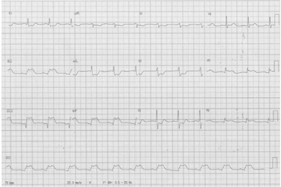
A Infarto agudo do miocárdio.
B Hipercalemia.
C Hipercalcemia.
D Bloqueio de ramo esquerdo.
Questão 78 · Distúrbios da condução atrioventricular · Cardiologia · 4000109480Homem de 55 anos de idade, hipertenso e com antecedente de angina estável, em uso de anlodipina, AAS, carvedilol e enalapril. Hoje queixa-se de fraqueza e tontura. Exame clínico bradicárdico sem outras alterações. Feito o eletrocardiograma a seguir. Qual é o diagnóstico?
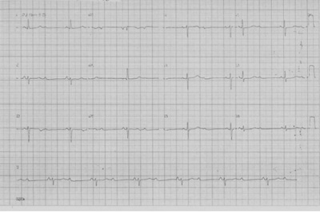
A BAV total.
B Bradicardia sinusal.
C BAV de segundo grau.
D BAV de primeiro grau.
Questão 79 · Peritonite bacteriana espontânea PBE · Tratamento · 4000109453Homem, 46 anos de idade, etilista há mais de 20 anos, em tratamento irregular para hipertensão arterial e cirrose hepática de etiologia alcoólica, procura o Pronto-Socorro queixando-se de desconforto, aumento do volume abdominal e inapetência há cerca de 1 semana. Nega febre, nega trauma ou sangramentos. Está evacuando 2x ao dia, com uso regular de laxativos. Ao exame clínico: Regular estado geral, desidratado +2/+4, vigil, calmo e colaborativo. PA=100x60mmHg; FC=108 bpm; FR=20rpm; abdome distendido, com maciez móvel presente, indolor à palpação profunda ou à descompressão brusca. Semiologias pulmonar e cardíaca sem alterações. Membros inferiores com edema +2/+4. Optou-se pela realização de uma paracentese diagnóstica, que encontrou a albumina de 0,5g/dL e 460 células/mm³ (80% de polimorfonucleares e 20% de mononucleares). O resultado da bacterioscopia com coloração de Gram foi ausente e a cultura do líquido ascítico está em análise. Exames laboratoriais séricos demonstram: Albumina = 2,5 g/dL; U=120 mg/dl; Cr=1,8 mg/dl; Na+ 128 mEq/l; K+ 3,2 mEq/L; Cálcio iônico= 1,20 mmol/l; Fósforo = 2,9mg/dL; urina tipo 1 normal; Hemograma com Hb=11,1 g/dl com VCM= 105 fl, Leucócitos=10.850/mm³ (diferencial normal); plaquetas=98.000/mm³. Qual das alternativas a seguir traz elementos que devem ser incluídos na prescrição deste paciente?
A Furosemida e suplementação de potássio.
B Furosemida e lactulose.
C Expansão volêmica e vancomicina.
D Expansão volêmica e ceftriaxone.
Questão 80 · Rastreamento · Indicações de rastreio da osteoporose · Conf irmação Diagnóstica · 4000109433Mulher de 67 anos de idade, cozinheira, vem para consulta, com demanda de prevenção de doenças e promoção da saúde. Nega doenças prévias. É tabagista 30 maços-ano e tem hábitos sedentários. Nega etilismo ou uso de drogas ilícitas. Ao exame clínico: dentes em mal estado de conservação, IMC= 32kg/m², circunferência abdominal 108 cm, PA= 136x70 mmHg, frequência cardíaca= 76bpm, sem outras alterações. Dentre as alternativas abaixo, qual delas apresenta dois exames que devem ser solicitados para esta paciente?
A Densitometria óssea e colesterol total e frações.
B Mamografia e angiotomografia de coronárias.
C Ultrassonografia de abdome e glicemia de jejum.
D Pesquisa de sangue oculto nas fezes e teste ergométrico.
Questão 81 · Corioamnionite · 4000109416Sr.ª AS, secundigesta com 32 semanas de gravidez, com 1 parto vaginal há 3 anos, vem ao pronto atendimento com queixa de corrimento de odor fétido há 6 dias, inicialmente em pequena quantidade, hoje chegou a molhar a roupa. Ao exame clínico, bom estado geral afebril, FC114, PA 10x7, altura uterina 27 cm, BCF 162, dinâmica uterina 3 contrações fracas em 10 minutos. Forro vaginal úmido. Aspecto de forro vaginal e de exame especular abaixo. Colo médio, 2cm de dilatação. Qual deve ser a conduta obstétrica?
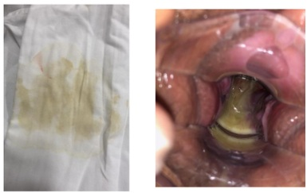
A Inibição do trabalho de parto.
B Indução de parto.
C Realização de cerclagem do colo.
D Tratamento antimicrobiano vaginal.
Questão 82 · Parada secundária da dilatação · 4000109344O partograma abaixo caracteriza:

A Fase de latência.
B Vício pélvico.
C Distocia funcional.
D Expulsivo prolongado.
Questão 83 · Cálculo da idade gestacional pela ultrassonograf ia IG USG · 4000109329Paciente de 16 anos de idade procura o serviço de saúde preocupada porque acha que a barriga está pequena e não sente o bebê mexer ainda. Não iniciou pré-natal por medo de contar para os pais da gravidez, não se lembra da data da última menstruação, mas acha que está com 7 meses (lembra de ter sangrado em maio). Nega doenças, refere uso eventual de maconha e cigarro. Ao exame obstétrico, altura uterina 22cm, BCF presente e rítmico ao sonar, especular sem alterações, toque vaginal com colo amolecido, grosso e impérvio. Realizada ultrassonogra a obstétrica, com peso fetal estimado de 650g e índice de líquido amniótico de 10cm, biometria compatível com 24 semanas. A orientação para a paciente é de que:
A A datação da gravidez é de 24 semanas, seguir pré-natal normal.
B Realizar dopplervelocimetria de artérias uterinas.
C É necessário repetir a ultrassonografia em 14 a 21 dias para confirmar a datação.
D Realizar amniocentese e cariótipo fetal.
Questão 84 · Particularidades no puerpério · 4000109307Paciente com diagnóstico pré-natal de diabetes gestacional realizado no teste de tolerância á glicose com 26 semanas, controlada com insulina NPH e regular. No pós-parto imediato a prescrição deve contemplar:
A Dieta geral e suspensão da terapêutica hipoglicemiante, sem controle de glicemia.
B Dieta para diabetes, manter insulina, controle de glicemia capilar às refeições.
C Dieta para diabetes, suspensão da terapêutica hipoglicemiante, glicemia às refeições.
D Dieta geral, iniciar hipoglicemiante oral, controle de glicemia capilar às refeições.
Questão 85 · Trabalho de parto prematuro TPP · 4000109288Quartigesta com 3 partos vaginais anteriores, 28 semanas de gravidez, vem ao pronto atendimento com queixa de dor em hipogástrio há 3 horas. Nega sangramento e refere secreção vaginal aumentada. Ao exame, bom estado geral, normotensa, afebril. Abdômen gravídico, normotônico, 2 contrações fracas em 10 minutos, BCF presente ritmico 140bpm. Especular com secreção bolhosa amarela fluida abundante, toque vaginal com colo amolecido, grosso, entreaberto. Qual é a conduta recomendada neste momento?
A Nifedipina.
B Metronidazol.
C Betametasona.
D Progesterona.
Questão 86 · Conduta · Interpretação · 4000109268Gestante, 32 anos de idade, secundigesta com uma cesárea anterior, 40 semanas e 2 dias de gravidez. Refere contrações irregulares e redução de movimentação fetal há 1 dia. Ao exame clínico, bom estado geral, corada, PA 120x70mmHg, altura uterina 30 cm, BCF presente rítmico. Toque vaginal com colo grosso, posterior, impérvio. Vitalidade fetal: tônus adequado, movimentação corpórea e respiratória presentes, índice de líquido amniótico de 4,2 cm. Cardiotocografia apresentada. Qual é a conduta adequada neste momento?
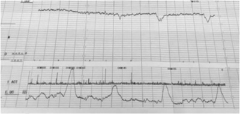
A Controlar a vitalidade fetal em 2 dias.
B Preparar o colo com prostaglandina.
C Indicar parto de imediato por via alta.
D Realizar hidratação materna e reavaliação.
Questão 87 · Conduta · 4000109191Primigesta, 27 anos de idade, vem para iniciar pré-natal. É hipertensa crônica diagnosticada aos 22 anos de idade, fez uso de enalapril por 3 anos e, após mudança de hábitos de vida, suspendeu o tratamento medicamentoso. Tem diabetes tipo 2, usava metformina antes de engravidar que também suspendeu. Idade gestacional de 9 semanas, assintomática. Ao exame clínico inicial, apresenta pressão arterial de 166x102mmHg, confirmada em segunda ocasião. Nesse momento, qual é a conduta com relação à pressão arterial?
A Tratamento medicamentoso ambulatorial.
B Tratamento endovenoso em regime de internação.
C Sulfato de magnésio em regime de urgência.
D Não há necessidade de tratamento pressórico.
Questão 88 · Antecedentes obstétricos · Etiologia e Prevenção · 4000109178Paciente com 1 lho vivo, deseja engravidar novamente e vem para aconselhamento pré-concepcional. Traz a foto do primeiro filho, quando recém-nascido: Qual é a orientação específica relacionada a esse quadro?
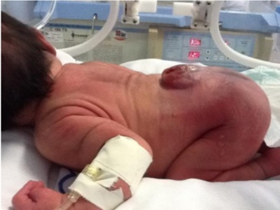
A Aconselhamento genético com cariótipo do casal.
B Sorologias para citomegalovírus, toxoplasmose, herpes.
C Pesquisa da mutação da metilenotetrahidrofolato redutase.
D Suplementação pré-concepcional de ácido fólico.
Questão 89 · Prevenção e manejo dos principais problemas relacionados à amamentação · Pediatria · 4000109125Paciente de 34 anos de idade, no segundo dia pós-parto normal, recém-nascido de termo e adequado para a idade gestacional. Refere muita dor mamilar à sucção da criança e pede orientação para a amamentação. Entre as figuras abaixo, qual das situações está relacionada com a queixa da paciente? A) B) C) D)
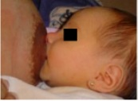
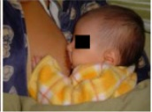


A A
B B
C C
D D
Questão 90 · Abortamento inevitável · 4000109059Paciente secundigesta com 9 semanas de gravidez pela data da última menstruação, refere cólica abdominal de forte intensidade e sangramento vaginal volumoso e espontâneo. Ao exame especular, moderada quantidade de sangue em fundo de saco posterior, com sangramento ativo. Toque vaginal com colo pérvio para 2 cm. Qual é a principal hipótese diagnóstica?
A Abortamento retido.
B Gestação incipiente.
C Abortamento inevitável.
D Incompetência cervical.
Questão 91 · Etiologia · Exames complementares · Quadro clínico · 4000109045Paciente de 40 anos apresenta sangramento menstrual excessivo com o seguinte achado histeroscópico: Qual é o tratamento mais adequado?

A Dispositivo intrauterino com progesterona.
B Ácido tranexâmico.
C Embolização.
D Ablação histeroscópica.
Questão 92 · Tratamento adjuvante · 4000109016Paciente de 45 anos e diagnóstico de câncer de mama esquerda, foi submetida a quadrantectomia e pesquisa de linfonodo sentinela. O estadiamento pós-cirúrgico foi T1; N0; M0. O exame anatomopatológico revelou carcinoma ductal invasor sem expressão para receptor de estrogênio, progesterona e HER-2. Qual é o tratamento adjuvante mais adequado?
A Modulador seletivo de receptor estrogênio.
B Quimioterapia com antraciclina.
C Inibidor de aromatase.
D Bloqueador de receptor c-erb-2.
Questão 93 · Indução de ovulação · 4000109000Paciente de 34 anos apresenta ciclos menstruais com intervalos longos, próximo a 40 dias, acne moderada e IMC de 28. Nuligesta, tenta engravidar há 1 ano, sem sucesso. Opta-se por induzir sua ovulação com inibidor de aromatase no início do ciclo menstrual. Qual a ação deste medicamento associada à maior fertilização?
A Liberar o folículo antral.
B Diminuir a produção de prolactina da adeno-hipófise.
C Reduzir a produção estrogênica ovariana e periférica.
D Aumentar o feedback positivo estrogênico hipotalâmico.
Questão 94 · Tumores ovarianos benignos · 4000108983Paciente de 23 anos, vida sexual com uso de preservativo, ciclos menstruais regulares. Realiza exame ginecológico com achado de tumoração anexial direita, móvel e indolor. Exame ultrassonográ co complementar identi ca tumoração ovariana de 6 cm compatível com diagnóstico de teratoma. A ooforoplastia direita prevenirá qual das seguintes explicações?
A Degeneração malígna.
B Sangramento.
C Infertilidade.
D Torção.
Revisar: possível letra faltando em enunciado
Questão 95 · Riscos · Benef ícios · 4000108965Paciente de 42 anos apresenta falência ovariana prematura. Apresenta calores e sudorese noturnos, além de dispareunia. Qual das situações abaixo está associada com a terapia de reposição estrogênica?
A Menor risco de doença cárdio-vascular.
B Aumento de risco de câncer de cólon.
C Redução de risco para câncer de ovário.
D Maior risco para câncer de endométrio.
Questão 96 · Herpes genital · 4000108951Paciente de 40 anos refere dor vulvar intensa há 2 dias, com o seguinte achado clínico: Qual é o tratamento adequado?
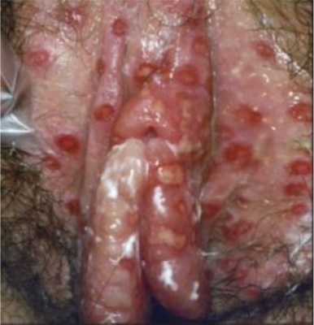
A Ceftriaxone.
B Valaciclovir.
C Clotrimazol.
D Penicilina.
Questão 97 · Indicações · Benef ícios · 4000108925Paciente de 60 anos, menopausa há 7 anos, sem uso de terapia hormonal apresenta queixa de corrimento em pequena quantidade, acinzentado, com odor pronunciado e os seguintes achados: - pH vaginal 6.0; - teste de hidróxido de potássio positivo; - ausência de "clue cells" (esfregaço vaginal); - presença de células basais em grande quantidade (esfregaço vaginal). Qual é o tratamento tópico vaginal mais adequado?
A Clotrimazol.
B Metronidazol.
C Gestrinona.
D Estrogênio.
Questão 98 · Ef eitos adversos · 4000108906Paciente de 19 anos, sem antecedentes clínicos significativos, nuligesta, inicia contraceptivo hormonal oral combinado com cartela de 24 dias e pausa de 4 dias. Faz uso regular e perfeito do contraceptivo. Após 5 meses de uso, não apresenta sangramento de privação no intervalo de 4 dias após o término da cartela habitual. Qual é a condição mais provavelmente associada a esta amenorreia?
A Atrofia endometrial.
B Gravidez.
C Hiperprolactinemia.
D Bloqueio eixo hipotálamo-hipófise.
Questão 99 · Slings · 4000108881Paciente de 45 anos refere perda de urina aos esforços. Apresenta ciclos menstruais regulares e antecedente de 2 partos vaginais assistidos e sem complicações, sendo o último há 9 anos. Ao exame ginecológico observa-se cistocele e retocele moderadas e perda objetiva de urina em manobra de esforço. A cirurgia indicada é correção da incontinência urinária através de faixa/tela tipo "sling" transobturatório. Qual é o princípio de correção da incontinência urinária do procedimento cirúrgico citado?
A Correção da cistocele
B Reforço do esfíncter uretral
C Apoio suburetral
D Reconstrução da fáscia endopélvica
Questão 100 · Tratamento · 4000108854Paciente de 21 anos com dor abdominal em hipogástrio e fossas ilíacas há 2 dias, com piora progressiva e febre medida de 38°C. Ao exame ginecológico apresenta conteúdo vaginal acinzentado e bolhoso; ao toque vaginal apresenta dor à mobilização do colo uterino e aumento anexial direito de difícil caracterização em decorrência da dor. Inicia tratamento com ceftriaxone intramuscular e doxiciclina oral. Qual é o agente antimicrobiano que deve ser associado?
A Metronidazol.
B Amoxicilina.
C Ciprofloxacino.
D Eritromicina.